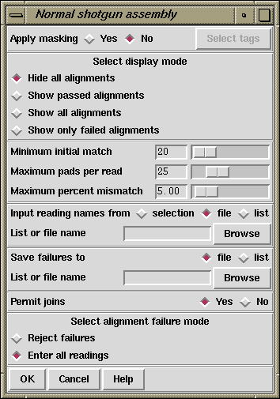

In the absence of any of the external assembly engines, which are in general superior, particularly for repetitive data, this is the mode that most users will employ for all assembly. It takes one reading at a time and compares it with all the data already assembled in the database. If a reading matches it is aligned. If the alignment is good enough the reading is entered into the database. If a reading aligns well with two contigs it is entered into one of them, then the two contigs are compared. If they align well they are joined. If the reading does not match it starts a new contig. If a reading matches but does not align well it can either be entered as a new contig or rejected.
A submode allows tagged regions of contigs to be masked and hence restricts the areas into which data is entered. Users select the types of tags to be used as masks. As outlined above readings are compared in two stages: first the program looks for exact matches of some minimum length, and then for each possible overlap it performs an alignment. If the masking mode is selected the masked regions are not used during the search for exact matches, but they are used during alignment. The effect of this is that new readings that would lie entirely inside masked regions will not produce exact matches and so will not be entered. However readings that have sufficient data outside of masked areas can produce hits and will be correctly aligned even if they overlap the masked data. For this mode the names of readings that do not produce matches are written to the error file with code 5. Note that new readings that carry tags of the types being used for masking will be masked only after they have been entered.

As explained above the user can select to "Apply masking", and if so, the "Select tags" button will be activated and if it is clicked will bring up a dialogue to allow tag types to be selected.
See section Tag Selector.
The "display mode" dialogue allows the type of output produced to be set. "Hide all alignments" means that only the briefest amount of output will be produced. "Show passed alignments" means that only alignments that fall inside the entry criteria will be displayed. "Show all alignments" means that all alignments, including those that fail the entry criteria, are displayed. "Show only failed alignments" displays alignments only for the readings that fail the entry criteria. Adding text to the text output window will increase the processing time.
When comparing each reading the program looks first for a "Minimum initial match", and for each such matching region found it will produce an alignment. If the "Maximum pads per read" and the "Maximum percent mismatch" are not exceeded the reading will be entered. The maximum pads can be inserted in both the reading and the consensus. If users agree we would prefer to swap the maximum pads criteria for a minimum overlap. i.e. only overlaps of some minimum length would be accepted.
Assembly usually works on sets of reading names and they can be read from either a "file" or a "list" and an appropriate browser is available to enable users to choose the name of the file or list. If just a single reading is to be assembled choose "single" and enter the filename instead of the file or list of filenames.
The routine writes the names of all the readings that are not entered to a "file" or a "list" and an appropriate browser is available to enable users to choose the name of the file or list. Occasionally it might be convenient to forbid joins between contigs to be made if a new reading overlaps them both, but the default is to "Permit joins".
If a reading is found to match but does not align within the alignment criteria it can be entered as a new contig or rejected. These two choices are described as "Enter all readings" or "Reject failures". Pressing the "OK" button will start the assembly process.
Note that this option may require the parameter maxseq to be set beforehand (see section Set Maxseq). This parameter defines the maximum length of consensus that can be created.
Typical output would be:
(Output removed to save space)
>>>>>>>>>>>>>>>>>>>>>>>>>>>>>>>>>>>>>>>>>>>>>>
Processing 51 in batch
Reading name xb61h12.s1
Reading length 104
Total matches found 2
Contig 9 position 590 matches strand -1 at position 1
Contig 36 position 92 matches strand -1 at position 1
Trying to align with contig 9
Percent mismatch 2.1, pads in contig 0, pads in gel 1
Percentage mismatch 2.1
590 600 610 620 630 640
Consensus TTGAAAAATTAAAAACTTTTTTTGAAAATAAAAAAGAGTGAAAGTAAAGTAAAAGACAAG
::::::::::::::::::::::::::::::::::::::::::::::::::::::::::::
Reading TTGAAAAATTAAAAACTTTTTTTGAAAATAAAAAAGAGTGAAAGTAAAGTAAAAGACAAG
1 11 21 31 41 51
650 660 670 680
Consensus TAGCATGTAAATCAACTAAAAATAACTAATATTTT
::::::::::::::::::::::::: ::::::::
Reading TAGCATGTAAATCAACTAAAAATAA,TAATATTT-
61 71 81 91
Trying to align with contig 36
Percent mismatch 0.0, pads in contig 0, pads in gel 0
Percentage mismatch 0.0
92 102
Consensus TTGAAAAATTAAAAACTTTT
::::::::::::::::::::
Reading TTGAAAAATTAAAAACTTTT
1 11
Overlap between contigs 36 and 9
Length of overlap between the contigs 111
Entering the new reading into contig 9
This gel reading has been given the number 47
Complementing contig 36
Complementing contig 9
Trying to align the two contigs
Percent mismatch 4.4, pads in contig 0, pads in gel 3
Percentage mismatch 5.3
86 96 106 116 126 136
Consensus AAAAGTTTTTAATTTTTCAATTGTTTGGGTGTTCCTTTGACTATTAGAAAAACACCCCCC
::::::::::::::::::::::::::::::::::::::::::::::::::: :: :::::
Consensus AAAAGTTTTTAATTTTTCAATTGTTTGGGTGTTCCTTTGACTATTAGAAAA,CA,CCCCC
1 11 21 31 41 51
146 156 166 176 186 196
Consensus TTGCTCCTGTTGTGCAATTTTTGTTTTAAGTTTTCAATC*TTT*TATTTTAATA
::::::::::::::::::::::::::::::::::: ::: ::: :::::: :::
Consensus TTGCTCCTGTTGTGCAATTTTTGTTTTAAGTTTTC-ATC,TTTTTATTTT-ATA
61 71 81 91 101 111
Editing contig 36
Completing the join between contigs 47 and 36
>>>>>>>>>>>>>>>>>>>>>>>>>>>>>>>>>>>>>>>>>>>>>>
(Output removed to save space)
Batch finished
100 sequences processed
96 sequences entered into database
11 joins made
9 joins failed